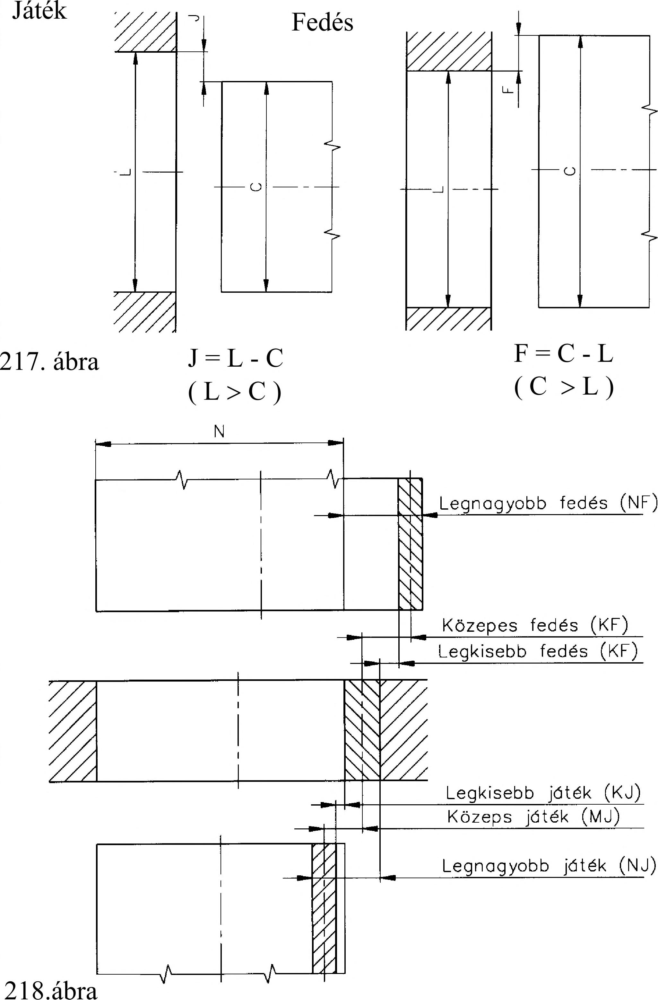
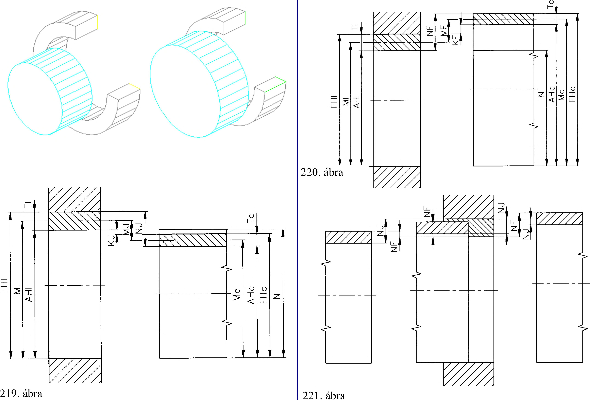

11. Illesztések 11. Illesztések 11.1. Az illesztés alapfogalmai A gépek, szerkezetek alkatrészekből állnak. Ezeket az alkatrészeket gyakran egymástól távol, más-más üzemben állítják elő. Ennek ellenére az így elkészített alkatrészeknek utánmunkálás és válogatás nélkül szerelhetőknek kell lenniük. Ezt elsősorban a mérettürésük megválasztása teszi lehetővé. Ha két alkatrészt legyártunk, akkor azok összeszereléskor valahogyan kapcsolódnak egymáshoz. A kapcsolódás az összeszerelés előtti tényleges méretektől függ. A csatlakozó két alkatrész kapcsolódó - összeszerelés előtti - tényleges méretei gyakorlatilag nem azonosak. Ha a furat tényleges mérete nagyobb a csap tényleges méreténél, akkor játéktól, ha a furat tényleges mérete kisebb a csap tényleges méreténél, akkor fedésről beszélünk. A tényleges méretek különbségéből adódó játékot vagy fedést illeszkedésnek nevezzük (217. ábra). Az illesztés két azonos alapméretü alkatrész csatlakozásának a jellege, amely meghatározza a kapcsolódó alkatrészek közötti játék vagy fedés nagyságát. Az illesztés jellege két kapcsolódó, tűréssel egymáshoz rendelt alkatrész közepes méretének a különbsége. Jellemzője a közepes játék vagy a közepes fedés (218. ábra). A közös alapméretű alkatrészek tűrésmezőinek nagysága és helyzete háromféle illesztést hozhat létre: laza (219. ábra), átmeneti (220. ábra) és szilárd illesztést (221. ábra). Szemléltető kép Szemléltető kép a játék értelmezéséhez a fedés értelmezéséhez 52
 